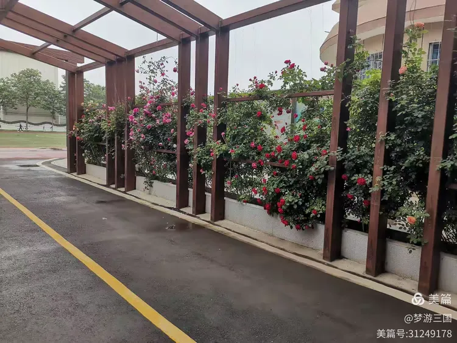
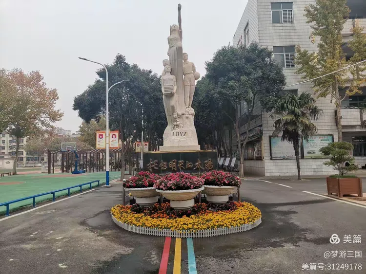

Lingbao No.1 Junior High School · 建校于1996年
灵宝市第一初级中学创办于1996年，是河南省首批示范性初中、河南省文明校园。学校坐落于灵宝市城关镇，占地面积120余亩，建筑面积5.6万平方米，环境优美，设施一流。
学校秉承"高质量、有特色、现代化、创一流"的办学宗旨，坚持"以人为本求实效，厚德博学创一流"的管理理念，弘扬"特别能吃苦、特别能奉献、特别能拼搏、特别能创新"的四特精神，形成了浓厚的教研氛围与优良学风。

经过近70年的办学历程，学校已成为豫西地区初中教育的标杆。现有教学班30个，在校学生1500余人，教职工120余人，其中高级教师20人，一级教师45人，本科及以上学历教师占比超过95%。
学科竞赛：学校构建数学、英语、道法、化学等多个名师工作室，常态化开展同课异构、抽人赛课与个人微课题，现有省市立项课题10个、在研待结项14个，教研成果突出。
素质教育：开设科技节、艺术节、体育节、读书节四大校园节日，拥有蓓蕾舞蹈团、声乐队、馨苑文学社、美术班、男女子篮球队、田径队等30余个学生社团，为学生全面发展提供广阔平台。
家校共育：依托家校共育机制，定期开展家长学校、校园开放日与课后服务社团活动，构建学校、家庭、社会协同育人格局。
校训：厚德博学、求实创新
办学目标：建设豫西一流、全省知名的现代化初中
育人目标：培养德智体美劳全面发展的社会主义建设者和接班人
